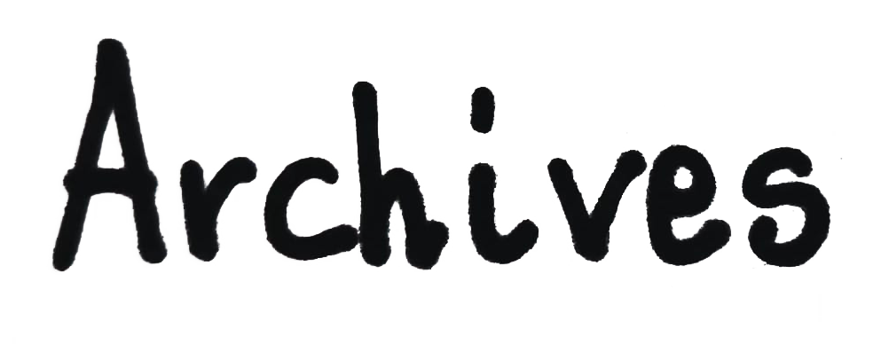

Parc Drakopoulos
Ρεμπέτικο γλέντι οικονομικής ενίσχυσης για το πάρκο Δρακόπουλου
° ˛ ° ˚* _Π_____*☽*˚ ˛ ✩ ˚˛˚*/______/__＼。✩˚ ˚˛ ˚ ˛˚˛˚｜ 田田｜門｜ ˚ ˚ ´´ ̛ ̛ ´´ ´´ ´´ ̛ ̛ ´´ ´´ ´´ ̛ ̛ ´´ ´´
The Host, the Guest, and the Ghost
Common Ground, at Big Table — Athens